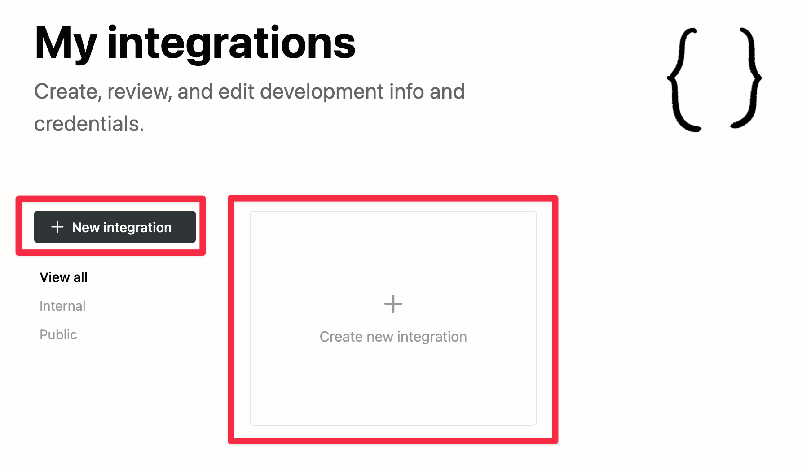
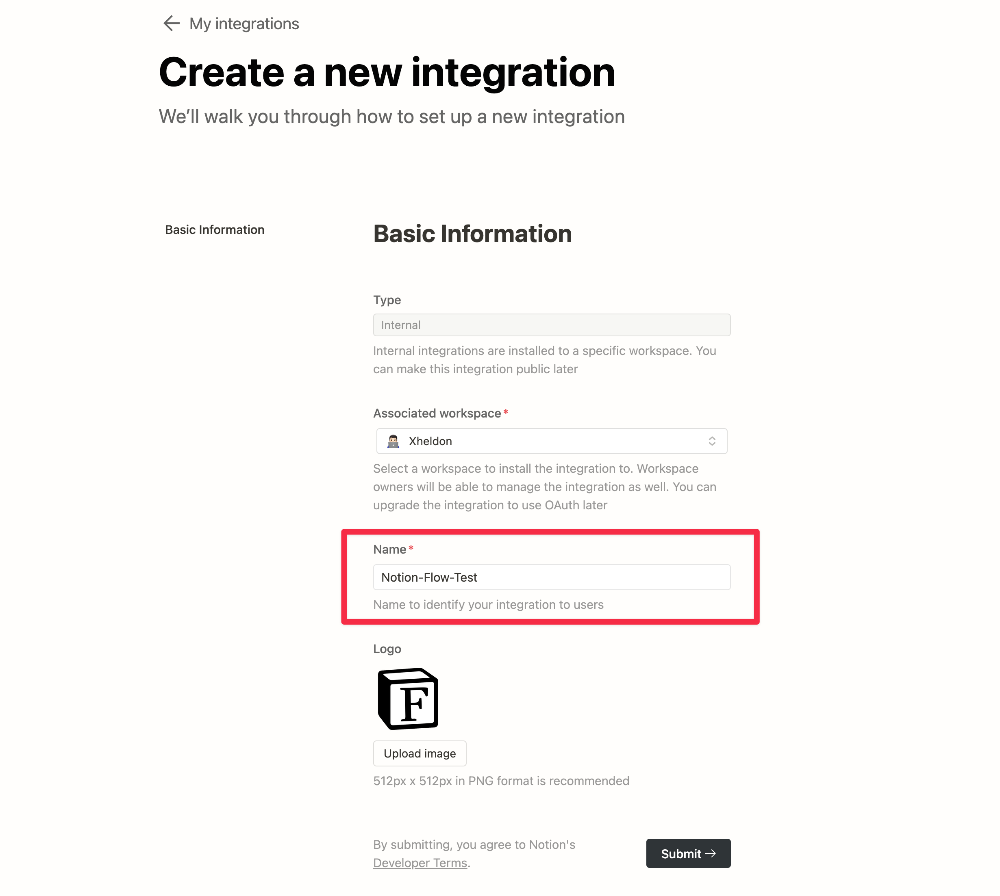
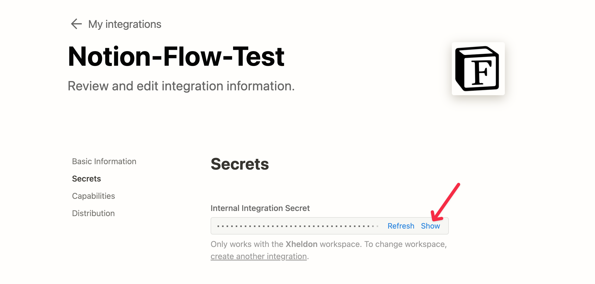
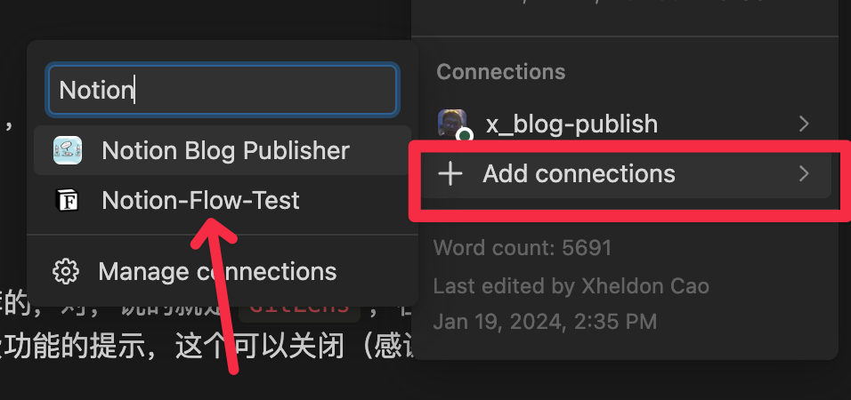
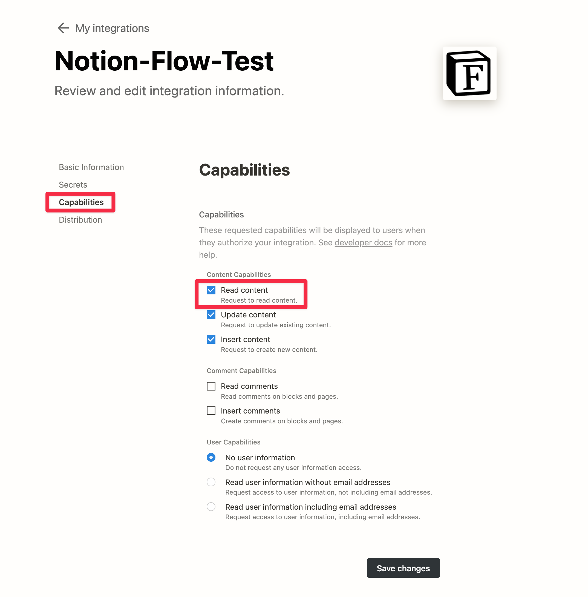

Notion Configuration
Get Notion Integration Token
Go to the Notion Developer website and follow the steps below to get your Notion Token:
Create a New Integration
Click the + New Integration button or the Create new integration card (as shown in the red box below).

Fill in Basic Information
Enter your Integration name (the only required field) and then click the Submit button.
Tip
Remember this name, as you will need it for authorization in Notion Pages/Databases later.

Record Notion Integration Token
On the next page, click Show, and the Token will be displayed. Click to copy it, and paste this Token in a secure place, as you will need it in the future.
Note
Do not share this Token with anyone, as it may result in the loss of your Notion content.

Copy My Database Template
Danger
The three page properties, including name(no any spaces and illegal file name characters), title, and date, are required. Otherwise, Notion Flow will not work properly and will throw a error.
You can create your own Database and proceed with the authorization, or you can choose to use the Notion Database template I am using, which already includes all the necessary and useful Properties. You only need to create Pages inside it, making it easier to publish articles in the future.
Tip
Currently, Notion's Page Properties support the following types of formats; other formats will be ignored:
- rich_text: string
- multi_select: yaml list
- select: string
- date: string
- url: string
- formula: string
- checkbox: string (true/false)
Authorize the Database
Tip
You must use a Notion Database to manage your blog articles, as only Pages within a Database have Properties, which are crucial information for the Front Matter. Consider duplicating this Database template and create Pages within it for future article writing.
You must authorize the Notion Database for the Integration you just applied for, so that Integration can access your Notion Database.
- Click on the three dots in the top right corner of the page
- Click the
+ Add connecttionsbutton at the bottom of the list that appears, and filter by the name of the Integration you just applied for, then select it!

That's it! If you want to further customize permissions, continue reading below.
More Information
You can adjust the permissions of the Integration by clicking on Capabilities on the left side of the page.
Note
Note that the required permission for Notion Flow is Read content. If you do not need to update the lastUpdateTime field of Notion Pages after publishing a blog (which allows you to easily see when the Page was published) or the AI features that will be provided in the future, then Update content and Insert content are not necessary.
Additionally, Notion Flow does not require any user information or comments from Notion, so you can leave the Comment and User Capabilities below as default.
